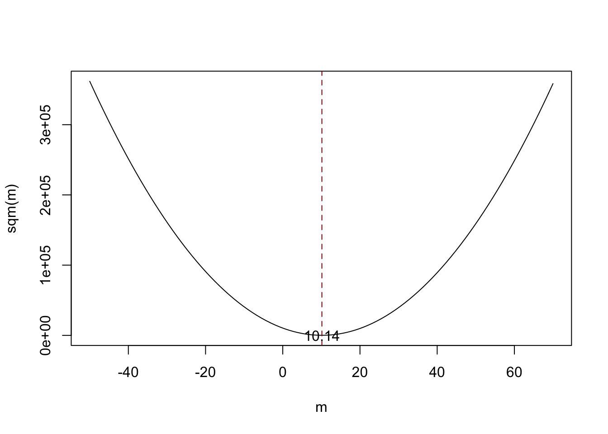

2.2 Estimating the Coefficients of the Linear Regression Model
In practice, the intercept \(\beta_0\) and slope \(\beta_1\) of the population regression line are unknown. Therefore, we must employ data to estimate both unknown parameters. In the following, a real world example will be used to demonstrate how this is achieved. We want to relate test scores to student-teacher ratios measured in Californian schools. The test score is the district-wide average of reading and math scores for fifth graders. Again, the class size is measured as the number of students divided by the number of teachers (the student-teacher ratio). As for the data, the California School data set (CASchools) comes with an R package called AER, an acronym for Applied Econometrics with R (Christian Kleiber and Zeileis 2022). After installing the package with install.packages(“AER”) and attaching it with library(AER) the data set can be loaded using the function data().
## # install the AER package (once)
## install.packages("AER")
##
## # load the AER package
library(AER)
# load the the data set in the workspace
data(CASchools)Once a package has been installed it is available for use at further occasions when invoked with library() — there is no need to run install.packages() again!
It is interesting to know what kind of object we are dealing with. class() returns the class of an object. Depending on the class of an object some functions (for example plot() and summary()) behave differently.
Let us check the class of the object CASchools.
class(CASchools)
#> [1] "data.frame"It turns out that CASchools is of class data.frame which is a convenient format to work with, especially for performing regression analysis.
With help of head() we get a first overview of our data. This function shows only the first 6 rows of the data set which prevents an overcrowded console output.
head(CASchools)
#> district school county grades students teachers
#> 1 75119 Sunol Glen Unified Alameda KK-08 195 10.90
#> 2 61499 Manzanita Elementary Butte KK-08 240 11.15
#> 3 61549 Thermalito Union Elementary Butte KK-08 1550 82.90
#> 4 61457 Golden Feather Union Elementary Butte KK-08 243 14.00
#> 5 61523 Palermo Union Elementary Butte KK-08 1335 71.50
#> 6 62042 Burrel Union Elementary Fresno KK-08 137 6.40
#> calworks lunch computer expenditure income english read math
#> 1 0.5102 2.0408 67 6384.911 22.690001 0.000000 691.6 690.0
#> 2 15.4167 47.9167 101 5099.381 9.824000 4.583333 660.5 661.9
#> 3 55.0323 76.3226 169 5501.955 8.978000 30.000002 636.3 650.9
#> 4 36.4754 77.0492 85 7101.831 8.978000 0.000000 651.9 643.5
#> 5 33.1086 78.4270 171 5235.988 9.080333 13.857677 641.8 639.9
#> 6 12.3188 86.9565 25 5580.147 10.415000 12.408759 605.7 605.4We find that the data set consists of plenty of variables and that most of them are numeric.
By the way: an alternative to class() and head() is str() which is deduced from ‘structure’ and gives a comprehensive overview of the object. Try!
Turning back to CASchools, the two variables we are interested in (i.e., average test score and the student-teacher ratio) are not included. However, it is possible to calculate both from the provided data. To obtain the student-teacher ratios, we simply divide the number of students by the number of teachers. The average test score is the arithmetic mean of the test score for reading and the score of the math test. The next code chunk shows how the two variables can be constructed as vectors and how they are appended to CASchools.
# compute STR and append it to CASchools
CASchools$STR <- CASchools$students/CASchools$teachers
# compute TestScore and append it to CASchools
CASchools$score <- (CASchools$read + CASchools$math)/2 If we ran head(CASchools) again we would find the two variables of interest as additional columns named STR and score (check this!).
Table 4.1 from the textbook summarizes the distribution of test scores and student-teacher ratios. There are several functions which can be used to produce similar results, e.g.,
mean() (computes the arithmetic mean of the provided numbers),
sd() (computes the sample standard deviation),
quantile() (returns a vector of the specified sample quantiles for the data).
The next code chunk shows how to achieve this. First, we compute summary statistics on the columns STR and score of CASchools. In order to get nice output we gather the measures in a data.frame named DistributionSummary.
# compute sample averages of STR and score
avg_STR <- mean(CASchools$STR)
avg_score <- mean(CASchools$score)
# compute sample standard deviations of STR and score
sd_STR <- sd(CASchools$STR)
sd_score <- sd(CASchools$score)
# set up a vector of percentiles and compute the quantiles
quantiles <- c(0.10, 0.25, 0.4, 0.5, 0.6, 0.75, 0.9)
quant_STR <- quantile(CASchools$STR, quantiles)
quant_score <- quantile(CASchools$score, quantiles)
# gather everything in a data.frame
DistributionSummary <- data.frame(Average = c(avg_STR, avg_score),
StandardDeviation = c(sd_STR, sd_score),
quantile = rbind(quant_STR, quant_score))
# print the summary to the console
DistributionSummary
#> Average StandardDeviation quantile.10. quantile.25. quantile.40.
#> quant_STR 19.64043 1.891812 17.3486 18.58236 19.26618
#> quant_score 654.15655 19.053347 630.3950 640.05000 649.06999
#> quantile.50. quantile.60. quantile.75. quantile.90.
#> quant_STR 19.72321 20.0783 20.87181 21.86741
#> quant_score 654.45000 659.4000 666.66249 678.85999As for the sample data, we use plot(). This allows us to detect characteristics of our data, such as outliers which are harder to discover by looking at mere numbers. This time we add some additional arguments to the call of plot().
The first argument in our call of plot(), score ~ STR, is again a formula that states variables on the y- and the x-axis. However, this time the two variables are not saved in separate vectors but are columns of CASchools. Therefore, R would not find them without the argument data being correctly specified. data must be in accordance with the name of the data.frame to which the variables belong to, in this case CASchools. Further arguments are used to change the appearance of the plot: while main adds a title, xlab and ylab add custom labels to both axes.
plot(score ~ STR,
data = CASchools,
main = "Scatterplot of Test Score and STR",
xlab = "STR (X)",
ylab = "Test Score (Y)")
The plot (Figure 4.2 in the book) shows the scatterplot of all observations on the student-teacher ratio and test score. We see that the points are strongly scattered, and that the variables are negatively correlated. That is, we expect to observe lower test scores in bigger classes.
The function cor() (see ?cor for further info) can be used to compute the correlation between two numeric vectors.
cor(CASchools$STR, CASchools$score)
#> [1] -0.2263627As the scatterplot already suggests, the correlation is negative but rather weak.
The task we are now facing is to find a line which best fits the data. Of course we could simply stick with graphical inspection and correlation analysis and then select the best fitting line by eyeballing. However, this would be rather subjective: different observers would draw different regression lines. On this account, we are interested in techniques that are less arbitrary. Such a technique is given by ordinary least squares (OLS) estimation.
The Ordinary Least Squares Estimator
The OLS estimator chooses the regression coefficients such that the estimated regression line is as “close” as possible to the observed data points. Here, closeness is measured by the sum of the squared mistakes made in predicting \(Y\) given \(X\). Let \(b_0\) and \(b_1\) be some estimators of \(\beta_0\) and \(\beta_1\). Then the sum of squared estimation mistakes can be expressed as
\[ \sum^n_{i = 1} (Y_i - b_0 - b_1 X_i)^2. \]
The OLS estimator in the simple regression model is the pair of estimators for intercept and slope which minimizes the expression above. The derivation of the OLS estimators for both parameters are presented in Appendix 4.1 of the book. The results are summarized in Key Concept 4.2.
Key Concept 4.2
The OLS Estimator, Predicted Values, and Residuals
The OLS estimators of the slope \(\beta_1\) and the intercept \(\beta_0\) in the simple linear regression model are \[\begin{align} \hat\beta_1 & = \frac{ \sum_{i = 1}^n (X_i - \overline{X})(Y_i - \overline{Y}) } { \sum_{i=1}^n (X_i - \overline{X})^2}, \\ \\ \hat\beta_0 & = \overline{Y} - \hat\beta_1 \overline{X}. \end{align}\] The OLS predicted values \(\widehat{Y}_i\) and residuals \(\hat{u}_i\) are \[\begin{align} \widehat{Y}_i & = \hat\beta_0 + \hat\beta_1 X_i,\\ \\ \hat{u}_i & = Y_i - \widehat{Y}_i. \end{align}\]
The estimated intercept \(\hat{\beta}_0\), the slope parameter \(\hat{\beta}_1\) and the residuals \(\left(\hat{u}_i\right)\) are computed from a sample of \(n\) observations of \(X_i\) and \(Y_i\), \(i\), \(...\), \(n\). These are estimates of the unknown population intercept \(\left(\beta_0 \right)\), slope \(\left(\beta_1\right)\), and error term \((u_i)\).The formulas presented above may not be very intuitive at first glance. The following interactive application aims to help you understand the mechanics of OLS. You can add observations by clicking into the coordinate system where the data are represented by points. Once two or more observations are available, the application computes a regression line using OLS and some statistics which are displayed in the right panel. The results are updated as you add further observations to the left panel. A double-click resets the application, i.e., all data are removed.
There are many possible ways to compute \(\hat{\beta}_0\) and \(\hat{\beta}_1\) in R. For example, we could implement the formulas presented in Key Concept 4.2 with two of R’s most basic functions: mean() and sum(). Before doing so we attach the CASchools dataset.
attach(CASchools) # allows to use the variables contained in CASchools directly
# compute beta_1_hat
beta_1 <- sum((STR - mean(STR)) * (score - mean(score))) / sum((STR - mean(STR))^2)
# compute beta_0_hat
beta_0 <- mean(score) - beta_1 * mean(STR)
# print the results to the console
beta_1
#> [1] -2.279808
beta_0
#> [1] 698.9329Calling attach(CASchools) enables us to address a variable contained in CASchools by its name: it is no longer necessary to use the $ operator in conjunction with the dataset: R may evaluate the variable name directly.
R uses the object in the user environment if this object shares the name of variable contained in an attached database. However, it is a better practice to always use distinctive names in order to avoid such (seeming) ambivalences!Notice that we address variables contained in the attached dataset CASchools directly for the rest of this chapter!
Of course, there are even more manual ways to perform these tasks. With OLS being one of the most widely-used estimation techniques, R of course already contains a built-in function named lm() (linear model) which can be used to carry out regression analysis.
The first argument of the function to be specified is, similar to plot(), the regression formula with the basic syntax y ~ x where y is the dependent variable and x the explanatory variable. The argument data determines the data set to be used in the regression. We now revisit the example from the book where the relationship between the test scores and the class sizes is analyzed. The following code uses lm() to replicate the results presented in figure 4.3 of the book.
# estimate the model and assign the result to linear_model
linear_model <- lm(score ~ STR, data = CASchools)
# print the standard output of the estimated lm object to the console
linear_model
#>
#> Call:
#> lm(formula = score ~ STR, data = CASchools)
#>
#> Coefficients:
#> (Intercept) STR
#> 698.93 -2.28Let us add the estimated regression line to the plot. This time we also enlarge the ranges of both axes by setting the arguments xlim and ylim.
# plot the data
plot(score ~ STR,
data = CASchools,
main = "Scatterplot of Test Score and STR",
xlab = "STR (X)",
ylab = "Test Score (Y)",
xlim = c(10, 30),
ylim = c(600, 720))
# add the regression line
abline(linear_model) 
Did you notice that this time, we did not pass the intercept and slope parameters to abline? If you call abline() on an object of class lm which only contains a single regressor, R draws the regression line automatically!